Actividad 04 — Una página demasiado convincente
CNO IV — Programación WAP · Grupo T37A
Magdalena Yesenia Tristán Rivera — Matrícula 174702
Profesor: Servando López Contreras
31 de agosto de 2026
SIMULACIÓN: SOCIAL-ENGINEER TOOLKIT (SET) · CREDENTIAL HARVESTERObjetivo de la actividad
Implementar y analizar, en un entorno de laboratorio controlado, una simulación de ingeniería social mediante el Social-Engineer Toolkit (SET), utilizando una página web ficticia para comprender el funcionamiento de una técnica de captura de información y reconocer los elementos que permiten identificar un intento de phishing.
De forma específica, se buscó:
- Configurar un escenario básico de ingeniería social con SET.
- Implementar una página web ficticia mediante el módulo Credential Harvester.
- Analizar cómo se transmite y registra la información introducida en un formulario.
- Identificar indicadores técnicos y visuales que permiten reconocer una página potencialmente fraudulenta.
- Proponer controles de seguridad orientados a prevenir o reducir el impacto de ataques de phishing.
Descripción del escenario
El escenario simula el área de seguridad informática de una organización que ha recibido varios reportes de empleados que aseguran haber recibido un mensaje relacionado con una supuesta actualización de sus credenciales de inicio de sesión. El mensaje contiene un enlace que dirige a un portal aparentemente institucional.
Para esta actividad se desarrolló una página ficticia de autenticación correspondiente a un sistema inventado, llamado Portal Académico UNITEC-LAB. La página incluye logotipo, campos de usuario y contraseña, un botón de inicio de sesión y un mensaje indicando que la sesión ha expirado y se necesita iniciar sesión nuevamente.
Configuración del laboratorio
El ataque se simuló utilizando Kali Linux ejecutado mediante WSL2 sobre Windows. Esta instancia cumple simultáneamente el papel de atacante — al correr Social-Engineer Toolkit y levantar el servidor web falso con Credential Harvester — y de víctima, ya que el navegador que "cae" en la página falsa se abre en la misma computadora y accede a través de 127.0.0.1 (localhost). Esto reproduce el mismo entorno aislado y controlado que pide la actividad, sin exponer nada hacia redes externas.
Pasos de preparación:
- Instalación de Social-Engineer Toolkit (SET) y del servidor Apache dentro de Kali Linux (paquete
set). - Creación de la página ficticia (
index.html) del Portal Académico UNITEC-LAB, con nombre del sistema, campos de usuario y contraseña, botón de ingreso y mensaje de sesión expirada. - Verificación de que la página se renderiza correctamente antes de iniciar el ataque.
- Inicio de SET (
sudo setoolkit) y navegación hasta el módulo Credential Harvester Attack Method, usando la opción Custom Import — en vez de Site Cloner — para no clonar ningún portal real, tal como lo exige la actividad. - Configuración de la IP de POST-back en
127.0.0.1, para que toda la información capturada se quede dentro de la misma máquina.
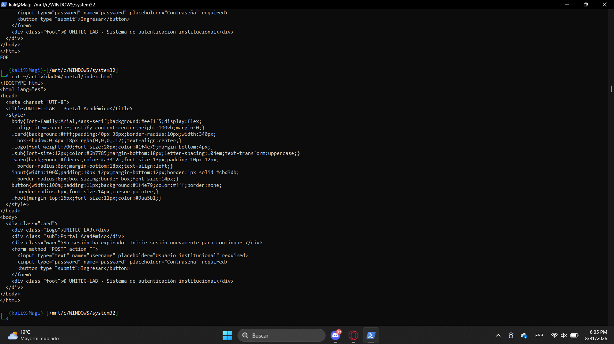
Evidencias y descripción del funcionamiento
A continuación se documenta, paso a paso, la ejecución completa de la práctica dentro de Kali Linux.
1. Inicio de SET
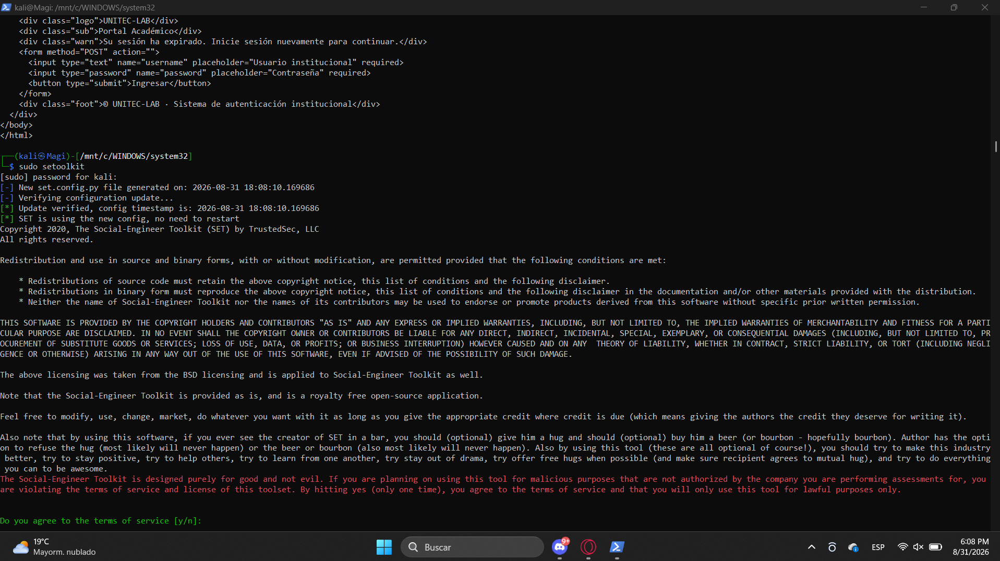
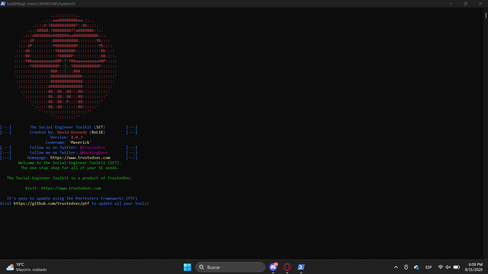
2. Selección del vector de ataque
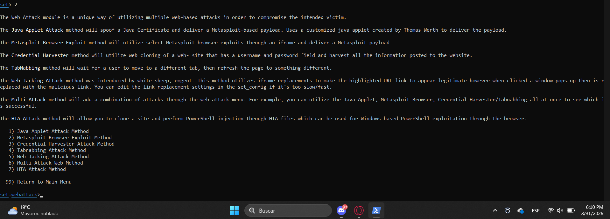
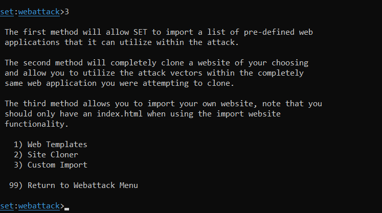
3. Configuración del Harvester
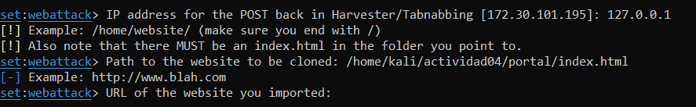
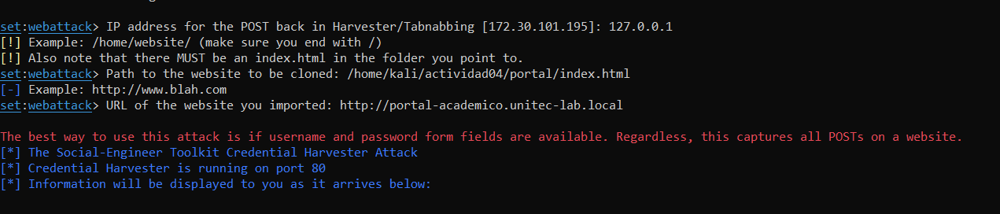
4. Simulación de la víctima
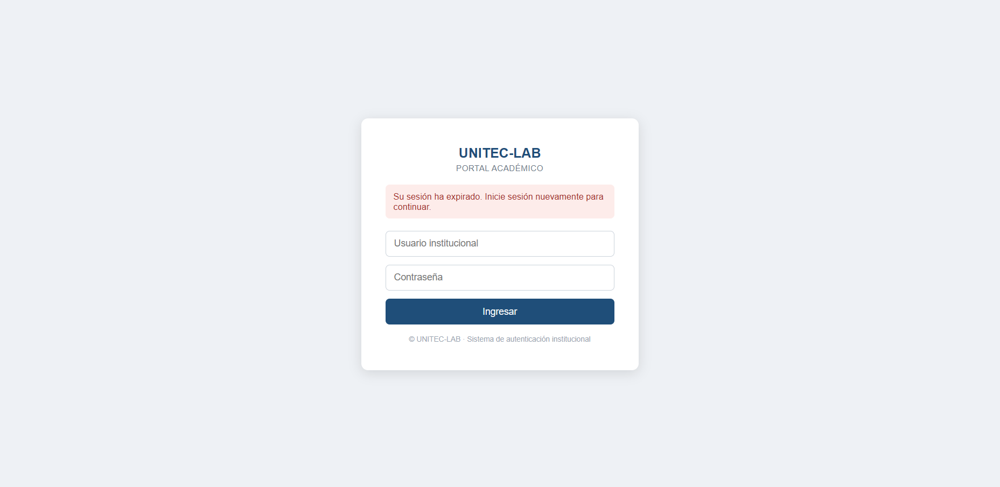
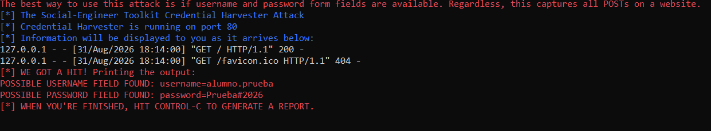
5. Reporte generado
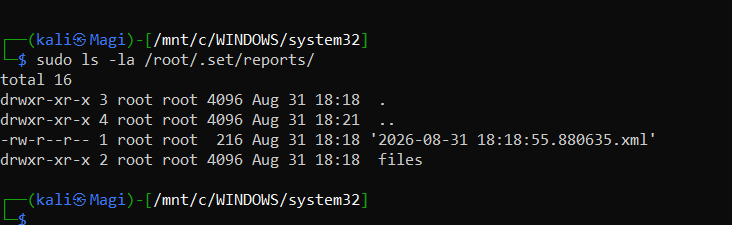
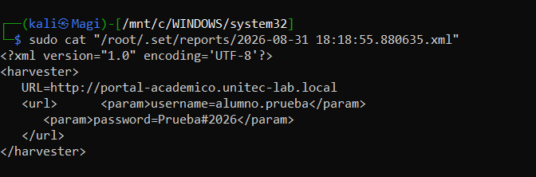
Explicación del flujo de captura de información
El recorrido completo de la información, desde que la víctima recibe el enlace hasta que el atacante cuenta con sus credenciales, sigue esta secuencia:
- La víctima recibe un mensaje (correo, SMS o chat) con un enlace que aparenta dirigir al portal institucional.
- Al hacer clic, su navegador solicita la página al servidor del atacante — en este laboratorio, Apache sirviendo en 127.0.0.1:80.
- SET entrega la página ficticia (Portal Académico UNITEC-LAB), que imita visualmente un inicio de sesión legítimo.
- La víctima introduce usuario y contraseña y presiona "Ingresar"; el formulario envía una petición HTTP POST con los parámetros username y password.
- El proceso Credential Harvester de SET intercepta esa petición POST, extrae los parámetros y los registra en el reporte (visible en pantalla como "WE GOT A HIT!").
- El navegador de la víctima es redirigido, reduciendo la sospecha de que algo salió mal.
- El atacante consulta el reporte generado (/root/.set/reports/*.xml) y ya cuenta con credenciales que podría intentar usar contra el sistema real.
1. VÍCTIMA
Recibe un mensaje con un enlace al portal falso
2. SERVIDOR SET
Apache + Credential Harvester sirven index.html en 127.0.0.1
3. ENVÍO POST
La víctima escribe usuario y contraseña y da "Ingresar"
4. CAPTURA
SET intercepta el POST y registra username/password
5. REPORTE
Credenciales guardadas en /root/.set/reports/*.xml
Diferencia entre captura de credenciales y vulneración de una contraseña
Aunque suelen confundirse, son dos ataques distintos. La captura de credenciales — lo realizado en esta práctica — es un ataque de ingeniería social: la víctima entrega voluntariamente su usuario y contraseña reales a una página falsa, engañada por el contexto (urgencia, apariencia institucional). No se rompe ningún mecanismo criptográfico ni se adivina nada; el atacante obtiene la contraseña porque la propia víctima la escribió.
Vulnerar una contraseña, en cambio, es un ataque técnico dirigido contra el mecanismo de autenticación: fuerza bruta, ataques de diccionario, o explotar hashes almacenados de forma débil, todo ello sin que la víctima participe ni tenga conocimiento del intento. Por eso los controles que mitigan cada uno son distintos: contra la captura de credenciales sirven la capacitación y la verificación de la fuente; contra la vulneración de contraseñas sirven políticas de contraseñas robustas, bloqueo por intentos fallidos y almacenamiento seguro de hashes.
Indicadores de phishing identificados
A partir del propio Portal Académico UNITEC-LAB construido en el laboratorio, se identificaron los siguientes indicadores que permiten reconocer una página de phishing:
| Indicador observado | Por qué delata phishing |
|---|---|
| URL basada en una IP o "localhost" en vez de un dominio institucional | Un portal legítimo usa su propio dominio registrado (por ejemplo unitec.edu.mx); nunca una IP directa. |
| Ausencia de HTTPS / candado en el navegador | Un sistema real que solicita contraseñas cifra el tráfico con TLS; el laboratorio sirvió la página por HTTP plano. |
| Mensaje de urgencia ("su sesión ha expirado, inicie sesión nuevamente") | Técnica clásica de ingeniería social: presiona a actuar rápido, sin verificar, generando ansiedad. |
| Diseño genérico o ligeramente distinto al portal real de la institución | Las páginas fraudulentas construidas rápido suelen tener inconsistencias visuales, tipografías o logotipos de baja calidad. |
| El formulario no lleva a un panel funcional tras enviarse | Los sitios de captura de credenciales no tienen backend real: solo capturan y redirigen a otra parte. |
| Origen del enlace inesperado (correo, QR o mensaje no solicitado) | El vector de entrada nunca es un acceso habitual guardado por el usuario, sino un enlace que llegó por sorpresa. |
Controles de seguridad propuestos
Para cada control se incluye su justificación y, siguiendo el criterio de evaluación, su alcance real y sus limitaciones:
| Control | Justificación | Alcances y limitaciones |
|---|---|---|
| Autenticación multifactor (MFA) | Aunque la contraseña se filtre, el atacante no puede completar el acceso sin el segundo factor. | Alcance: neutraliza el uso aislado de una contraseña robada. Limitación: no protege contra phishing en tiempo real tipo adversary-in-the-middle, que también intercepta el código o el token de sesión. |
| Filtrado de correo / anti-phishing (SPF, DKIM, DMARC) | Bloquea o marca mensajes que suplantan el dominio institucional antes de llegar al usuario. | Alcance: reduce mensajes falsificados que lleguen por correo. Limitación: no cubre otros canales (SMS, WhatsApp, redes sociales) ni dominios "look-alike" no contemplados en las políticas. |
| Capacitación continua en concientización de phishing | El eslabón más débil suele ser humano; simulacros periódicos entrenan a detectar señales como las de la tabla anterior. | Alcance: mejora la capacidad de detección del personal. Limitación: su efectividad decae con el tiempo si no se refuerza, y no elimina por completo el error humano. |
| Verificación de certificados y extensiones anti-phishing en el navegador | Alertan automáticamente sobre certificados inválidos o dominios de registro muy reciente. | Alcance: detecta configuraciones técnicas sospechosas. Limitación: un atacante puede obtener certificados SSL válidos y gratuitos para su dominio falso, evadiendo esta señal. |
| Monitoreo de dominios similares (typosquatting) y reporte a un CSIRT | Permite dar de baja páginas falsas antes de que capturen credenciales de forma masiva. | Alcance: reduce el tiempo de vida de campañas activas. Limitación: depende de la velocidad de respuesta del proveedor o registrador; el daño puede ocurrir antes del retiro del sitio. |
Conclusión
// APRENDIZAJES
Esta práctica permitió comprobar, de forma directa y controlada, qué tan poco esfuerzo técnico requiere una campaña de phishing efectiva: bastó una página HTML sencilla, un servidor web y un módulo de captura para obtener credenciales en texto plano en cuanto la víctima confió en la apariencia del sitio. El punto débil no estuvo en ningún cifrado roto ni en ninguna vulnerabilidad de software, sino en la confianza depositada en una interfaz visualmente convincente.
Esto confirma que la defensa contra el phishing no puede depender de un solo control: se necesita una combinación de medidas técnicas (MFA, filtrado de correo, verificación de certificados) y medidas humanas (capacitación y hábito de verificar antes de introducir credenciales), ya que cada control por sí solo tiene límites claros, como se documentó en la tabla de controles.
Reconocer los indicadores de una página falsa —URL, ausencia de HTTPS, mensajes de urgencia, inconsistencias visuales— es una habilidad tan importante como cualquier control técnico, porque suele ser la última barrera antes de que la información llegue al atacante.
Referencias
- TrustedSec. (2024). Social-Engineer Toolkit (SET). GitHub. github.com/trustedsec/social-engineer-toolkit
- MITRE ATT&CK. T1566 – Phishing. attack.mitre.org/techniques/T1566
- MITRE ATT&CK. T1566.002 – Phishing: Spearphishing Link. attack.mitre.org/techniques/T1566/002
- OWASP Foundation. Phishing — guías de concientización y prevención. owasp.org
- Kali Linux Documentation. Kali Linux on WSL2. kali.org/docs/wsl